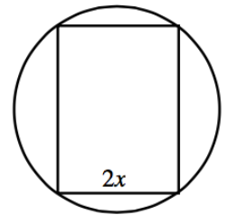

Multiply or divide each of the following expressions. Simplify the result, if possible. State the values of the variable that need to be excluded.
\(\large \frac { 12 ( x + 9 ) ^ { 4 } } { 8 x } \cdot \frac { x ^ { 2 } + 5 x } { ( x + 9 ) ^ { 12 } }\)
\(\large \frac { 5 x ^ { 2 } - 14 x - 3 } { x ^ { 2 } - 9 } \div \frac { 5 x ^ { 2 } + 6 x + 1 } { 2 x ^ { 2 } + x - 1 }\)
\(\large \frac { x ^ { 3 } - 16 x } { x ^ { 6 } } \cdot \frac { 3 - 2 x } { 2 x ^ { 2 } + 5 x - 12 }\)
Is \(\frac { 3 x } { 2 x + 5 } + \frac { 12 } { 2 x + 5 }\) equivalent to \(\frac { 3 x + 12 } { 4 x + 10 }\)? Justify your answer.
Add or subtract each of the following rational expressions. Simplify the result, if possible. State the value(s) of the variable that need to be excluded.
\(\frac { 5 x } { x + 3 } - 4\)
\(\large \frac { 4 x ^ { 2 } + 5 x - 5 } { 16 x ^ { 2 } - 1 } - \frac { x - 2 } { 4 x - 1 }\)
\(\large \frac { 7 } { 4 x ^ { 3 } } + \frac { 5 } { 6 x } + \frac { 2 } { 3 x ^ { 4 } }\)
\(\large \frac { 3 x } { 2 x ^ { 2 } + 3 x - 5 } - \frac { 2 x - 6 } { 2 x ^ { 2 } - x - 15 }\)
Simplify the following expressions.
\(\large \frac { ( x + 2 ) ^ { 3 } } { ( x + 2 ) }\)
\(\large \frac { x ^ { 2 } - 5 x + 6 } { ( x - 2 ) ^ { 2 } }\)
\(\large \frac { 2 x ^ { 2 } - 2 y ^ { 2 } } { x + y }\)
Complete the following operations with rational expressions.
\(\frac{1}{x}-\frac{1}{y}\)
\(\left(\frac{1}{x}-\frac{1}{y}\right)(x+y)\)
State all values of \(0\leθ<2\pi\) that satisfy each of the following equations. Sketching a unit circle may help.
\(\sin(θ)=-\frac{1}{2}\)
\(\cos(θ)=\frac{\sqrt{2}}{2}\)
\(\tan(θ)=\sqrt{3}\)
\(\sin(θ)=-1\)
The circle shown below has a diameter of \(10\) cm. The figure inscribed in the circle is a rectangle with width \(2x\). Express each of the following quantities in terms of \(x\).
The perimeter of the rectangle.
The area of the rectangle.

Solve for \(x\) and \(y\): \(\begin{aligned} [t] 3 x - 2 y = a \\ x + y = b \quad \end{aligned}\)
Where do the graphs of \(x^2-y=4\) and \(y=2x-1\) intersect?
Are the following expressions equivalent? Explain how you know using at least two different methods.
\(x^2(x+2)+3(x+2)\) and \((x^2+3)(x+2)\)
Solve each of the following equations. As you work through solving each part, think about how the equations are related.
\(4=2x-3\)
\(-2=2x-3\)
\(u^2-2u-8=0\)
\((2x-3)^2-2(2x-3)-8=0\)